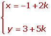
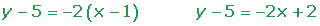

Ejercicios de la ecuación de la recta I
1Una recta pasa por el punto A(−1, 3) y tiene un vector director = (2, 5). Escribir su ecuación vectorial.
2Una recta pasa por el punto A(−1, 3) y tiene un vector director = (2, 5). Escribir sus ecuaciones paramétricas.
3Una recta pasa por el punto A(−1, 3) y tiene un vector director = (2, 5). Escribir su ecuación continua.
4Escribir la ecuación punto pendiente de:
1 Una recta pasa por el punto A(−1, 3) y tiene un vector director = (2, 5).
2 Una recta que pasa por los puntos A(−2, −3) y B(4, 2).
3 Una recta que pasa por A(−2, −3) y tiene una inclinación de 45°.
5Escribir la ecuación general de la recta que:
1 Pasa por A (1, 5) y tiene como vector director igual (−2, 1).
2 Pasa por A (1, 5) y tiene como pendiente m = −2.
6Hallar la ecuación en forma explícita de la recta que pasa por A (1, 5) y tiene como pendiente m = −2.
7Hallar la ecuación de la recta que pasa por A(1, 3) y B(2, −5).
8Escribe de todas las formas posibles la ecuación de la recta que pasa por los puntos A(1, 2) y B(−2, 5).
9Hallar la pendiente y la ordenada en el origen de la recta 3x + 2y − 7 = 0.
10Estudiar la posición relativa de las rectas de ecuaciones:
1 2x + 3y − 4 =0
2 x − 2y + 1= 0
3 3x − 2y − 9 = 0
4 4x + 6y − 8 = 0
5 2x − 4y − 6 = 0
6 2x + 3y + 9 = 0
11¿Son secantes las rectas r ≡ x + y − 2 = 0 y s ≡ x − 2y + 4 = 0? En caso afirmativo calcular el punto de corte.
12Clasificar el triángulo determinado por los puntos: A(6, 0), B(3, 0) y C(6, 3).
13Clasificar el triángulo determinado por los puntos: A(4, −3), B(3, 0) y C(0, 1).
14De un paralelogramo ABCD conocemos A(1, 3), B(5, 1), C(−2, 0). Halla las coordenadas del vértice D.
15Se tiene el cuadrilátero ABCD cuyos vértices son A(3, 0), B(1, 4), C(−3, 2) y D(−1, −2). Comprueba que es un paralelogramo y determina su centro.
16De un paralelogramo se conoce un vértice, A(8, 0), y el punto de corte de las dos diagonales, Q(6, 2). También sabemos que otro vértice se encuentra en el origen de coordenadas. Calcular:
1Los otros vértices.
2Las ecuaciones de las diagonales.
3La longitud de las diagonales.
17Hallar la ecuación de la recta r, que pasa por A(1, 5), y es paralela a la recta s ≡ 2x + y + 2 = 0.
18Hallar la ecuación de la recta que pasa por el punto (2, −3) y es paralela a la recta que une los puntos (4, 1) y (−2, 2).
19La recta r ≡ 3x + ny − 7 = 0 pasa por el punto A(3, 2) y es paralela a la recta s ≡ mx + 2y − 13 = 0. Calcula m y n.
20Dado el triángulo ABC, de coordenadas A(0, 0), B(4, 0) y C(4, 4); calcula la ecuación de la mediana que pasa por el vértice B.
21Los puntos A(−1, 3) y B(3, −3), son vértices de un triángulo isósceles ABC que tiene su vértice C en la recta 2x − 4y + 3 = 0 siendo AC y BC los lados iguales. Calcular las coordenadas del vértice C.
- 1
- 2
- 3
- 4
- 5
- 6
- 7
- 8
- 9
- 10
- 11
- 12
- 13
- 14
- 15
- 16
- 17
- 18
- 19
- 20
- 21
Ejercicio 1 resuelto
Una recta pasa por el punto A(−1, 3) y tiene un vector director = (2, 5). Escribir su ecuación vectorial.
Ejercicio 2 resuelto
Una recta pasa por el punto A(−1, 3) y tiene un vector director = (2, 5). Escribir sus ecuaciones paramétricas.

Ejercicio 3 resuelto
Una recta pasa por el punto A(−1, 3) y tiene un vector director = (2, 5). Escribir su ecuación continua.
Ejercicio 4 resuelto
Escribir la ecuación punto pendiente de:
1 Una recta pasa por el punto A(−1, 3) y tiene un vector director = (2, 5) .
2 Una recta que pasa por los puntos A(−2, −3) y B(4,2).
3 Una recta que pasa por A(−2, −3) y tiene una inclinación de 45°.
Ejercicio 5 resuelto
Escribir la ecuación general de la recta que:
1 Pasa por A (1, 5) y tiene como vector director igual (−2, 1).
2 Pasa por A (1,5) y tiene como pendiente m=-2.

Ejercicio 6 resuelto
Hallar la ecuación en forma explícita de la recta que pasa por A (1, 5) y tiene como pendiente m = −2.
Ejercicio 7 resuelto
Hallar la ecuación de la recta que pasa por A(1, 3) y B(2, −5).

Ejercicio 8 resuelto
Escribe de todas las formas posibles la ecuación de la recta que pasa por los puntos A(1, 2) y B(−2, 5).


Ejercicio 9 resuelto
Hallar la pendiente y la ordenada en el origen de la recta 3x + 2y − 7 = 0.
Ejercicio 10 resuelto
Estudiar la posición relativa de las rectas de ecuaciones:
1 2x + 3y − 4 =0
2 x − 2y + 1= 0
3 3x − 2y − 9 = 0
4 4x + 6y − 8 = 0
5 2x − 4y − 6 = 0
6 2x + 3y + 9 = 0
Las rectas 1 y 4 son coincidentes , porque todos sus coeficientes son proporcionales:
Las rectas 2 y 5 y las 1 y 6 son paralelas respectivamente, ya que existe proporcionalidad entre los coeficientes de x y de y, pero no en el término independiente.
Ejercicio 11 resuelto
¿Son secantes las rectas r ≡ x + y − 2 = 0 y s ≡ x − 2y + 4 = 0? En caso afirmativo calcular el punto de corte.
Ejercicio 12 resuelto
Clasificar el triángulo determinado por los puntos: A(6, 0), B(3,0) y C(6, 3).


Ejercicio 13 resuelto
Clasificar el triángulo determinado por los puntos: A(4, −3), B(3, 0) y C(0, 1).


Ejercicio 14 resuelto
De un paralelogramo ABCD conocemos A(1, 3), B(5, 1), C(−2, 0). Halla las coordenadas del vértice D.
Ejercicio 15 resuelto
Se tiene el cuadrilátero ABCD cuyos vértices son A(3, 0), B(1, 4), C(−3, 2) y D(−1, −2). Comprueba que es un paralelogramo y determina su centro.


Ejercicio 16 resuelto
De un paralelogramo se conoce un vértice, A(8, 0), y el punto de corte de las dos diagonales, Q(6, 2). También sabemos que otro vértice se encuentra en el origen de coordenadas. Calcular:
1Los otros vértices.

2Las ecuaciones de las diagonales.
3La longitud de las diagonales.
Ejercicio 17 resuelto
Hallar la ecuación de la recta r, que pasa por A(1, 5), y es paralela a la recta s ≡ 2x + y + 2 = 0.

Ejercicio 18 resuelto
Hallar la ecuación de la recta que pasa por el punto (2, −3) y es paralela a la recta que une los puntos (4, 1) y (−2, 2).
Ejercicio 19 resuelto
La recta r ≡ 3x + ny − 7 = 0 pasa por el punto A(3,2) y es paralela a la recta s ≡ mx + 2y − 13 = 0. Calcula m y n.


Ejercicio 20 resuelto
Dado el triángulo ABC, de coordenadas A(0, 0), B(4, 0) y C(4, 4); calcula la ecuación de la mediana que pasa por el vértice B.


Ejercicio 21 resuelto
Los puntos A(-1, 3) y B(3, -3), son vértices de un triángulo isósceles ABC que tiene su vértice C en la recta 2x − 4y + 3 = 0 siendo AC y BC los lados iguales. Calcular las coordenadas del vértice C.


 Ejercicios
Ejercicios